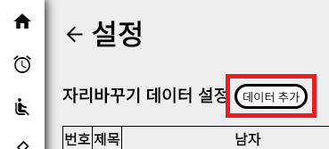

자리바꾸기 사용법 - 데이터 삽입
이 도움말에서는 Cotton Candy의 자리바꾸기 기능을 알아볼 거예요. 잘 숙지하시고 따라해주세요!

1. 자리바꾸기 설정으로 이동합니다.
2. 데이터 추가 버튼을 누릅니다.
3. 양식에 맞게 내용을 작성합니다. 이름을 적을 때에는 꼭 쉼표를 붙여서 구분해줘야 합니다. (예: 홍길동,강선봉,김철수)
자리바꾸기 이름 데이터를 추가하는 방법은 여기까지입니다. 리모컨의 오른쪽 화살표를 눌러 다음으로 넘어가주세요.